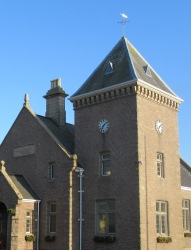
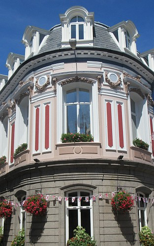

Y'a douze Pâraîsses en Jèrri.
Un Connêtabl'ye est êlu coumme chef d'la Pâraisse.
Un Protchuleux du Bein Publyi est êlu coumme èrprésentant léga et finnancyi d'la Pâraîsse.
Un Chent'nyi est êlu coumme membre d'la Police Honorifique d'la Pâraisse. La Police Honorifique contcheint étout des Vîngt'nièrs et des Officièrs d'Connêtabl'ye

Vocabulaithe:
|
Jèrriais |
Angliais |
Français |
|
la Pâraisse |
Parish |
la Paroisse |
|
la Salle Pârouaîssiale |
Parish Hall |
la Salle Paroissiale |
|
l'Assembliée d'Pâraisse |
Parish Assembly |
l'Assemblée Paroissiale |
|
la Police Honorifique |
Honorary Police |
la Police Honorifique |
|
lé Connêtabl'ye |
Constable |
le Connétable |
|
lé Protchuleux du Bein Publyi |
Procureur du Bien Public |
le Procureur du Bien Public |
|
lé Chent'nyi |
Centenier |
le Centenier |
|
lé Vîngt'nyi |
Vingtenier |
le Vingtenier |
|
l'Offici d'Connêtabl'ye |
Constable's Officer |
l'Officier de Connétable |
|
lé Conmité des C'mîns |
Roads Committee |
le Comité des Chemins |
|
lé rât |
rates |
la taxe paroissiale |
 |
 |
 |
 |
||
Salle Pârouaîssiale dé Saint Jean |
Salle Pârouaîssiale dé Saint Hélyi |
Salle Pârouaîssiale dé Saint Ouën |
Salle Pârouaîssiale dé Saint Pièrre |
Salle Pârouaîssiale dé Saint Louothains |
Salle Pârouaîssiale dé Sainte Mathie |